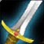
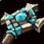
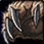
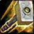

Tier lists niveau 60
Quelles spécialisations dominent au niveau 60 ? Quatre classements : dégâts, tanks, soigneurs et JcJ. Clique sur une spé pour voir son build, ses statistiques et ses races conseillées.
📅 Mise à jour le 3 novembre 2026🛠 Patch 1.60.1.70753
Dégâts en donjon et en raid
📅 Créée le 1er octobre 2026🛠 Patch 1.60.1.70124 (bêta)Fiabilité : faible
Une lettre par spécialisation de dégâts, pour les donjons du niveau 60 et les raids qui ouvrent le 9 décembre. Les tanks et les soigneurs ont leur propre liste.
- ArcanesMage
Le choix évident côté mage : en tête de tous les classements.
- AfflictionDémoniste
Les meilleurs dégâts sur la durée grâce aux sorts qui s'accumulent.

FureurGuerrierLa spé de dégâts du guerrier, devant Armes. Quelques soucis de rage restent à corriger.
- Maîtrise des bêtesChasseur
Le familier et Courroux bestial : la valeur sûre du chasseur.
- PrécisionChasseur
Visée et Tir de sniper, de grosses rafales à distance.
- SurvieChasseur
Le plus haut potentiel du chasseur, mais ses talents clés n'ont pas été testés en bêta.
- AssassinatVoleur
Poisons toujours actifs sur un boss immobile : le choix JcE du voleur.

OmbrePrêtreForme d'ombre et Tissage de l'ombre, désormais pour lui seul.
- ÉlémentaireChaman
Faible avant le niveau 40, nettement renforcé au lancement : Éclair +80 % et Surcharge de foudre jusqu'à 30 %.
- FeuMage
Enflammer et Combustion : pas encore prouvé, mais pas mauvais.
- DestructionDémoniste
Conflagration et Incinérer. Souffre quand il faut bouger.

ÉquilibreDruideÉclipse et aura de critique pour le groupe, un peu juste en zone.
- ArmesGuerrier
Correct en JcE, mais Fureur fait mieux si seuls les dégâts comptent.
- CombatVoleur
Déluge de lames pour les packs, Assassinat pour les boss.
- AméliorationChaman
Entièrement refait, un cran en dessous d'Élémentaire.
- GivreMage
Ne finira pas en tête des dégâts, mais Froid hivernal aide tout le raid.
- Combat faroucheDruide
En donjon, le druide farouche sert surtout de tank (ours).
- FinesseVoleur
Taillé pour l'ouverture en JcJ, pas pour un long combat de boss.
- DémonologieDémoniste
Classements très partagés : résultats en dents de scie.

VindictePaladinA enfin une vraie rotation, mais reste en bas des classements.
Sur quoi repose ce classement : Projection au niveau 60 à partir des talents de la bêta et des fiches de chaque spé, recoupée avec les classements publics du moment. Les statistiques des objets n'étaient pas encore visibles : ce n'est pas un relevé de dégâts réels.
Tanks
📅 Créée le 1er octobre 2026🛠 Patch 1.60.1.70124 (bêta)Fiabilité : faible
Qui tient un donjon du niveau 60, et à qui confier les raids du 9 décembre. Trois spés peuvent tanker : c'est toute la liste.
- ProtectionGuerrier
Heurt de bouclier, Dernier rempart et Charge en posture défensive : le tank principal.
- ProtectionPaladin
Le Sceau de fureur transforme Jugement en provocation. Excellent en donjon.
- Combat faroucheDruide
Bon tank en donjon, mais plus exposé aux coups critiques et écrasants. Pas le premier choix en raid.
Sur quoi repose ce classement : Projection au niveau 60, d'après la présentation de Blizzard du 30 septembre et les fiches de chaque spé. Aucun raid n'a encore été testé.
Soigneurs
📅 Créée le 1er octobre 2026🛠 Patch 1.60.1.70124 (bêta)Fiabilité : faible
Cinq soigneurs, une lettre chacun, pour les donjons du niveau 60 et les raids de décembre. Boucliers, soins sur une cible et soins de groupe sont trois métiers différents.
- DisciplinePrêtre
Boucliers, Pénitence et Égide divine : à emmener dans tous les donjons.
- SacréPaladin
Le spécialiste des soins sur le tank, avec de très bonnes bénédictions.
- RestaurationChaman
Remous puis Salve de guérison, et Totem de vague de mana pour le groupe.
- RestaurationDruide
Croissance sauvage et Prompte guérison, sans bouclier.
- SacréPrêtre
Prière de guérison quand les dégâts sont répartis ; Discipline fait mieux sur une cible.
Sur quoi repose ce classement : Projection au niveau 60, d'après les fiches de chaque spé et les guides de la bêta (niveau 20). Aucun relevé de raid n'existe encore.
JcJ (champs de bataille et monde)
📅 Créée le 1er octobre 2026🛠 Patch 1.60.1.70124 (bêta)Fiabilité : faible
Champs de bataille et JcJ sauvage : pas d'arène ni de classement coté. Chaque spé est jugée sur son rôle réel : porter le drapeau, tenir une base, soigner ou tuer.
- Combat faroucheDruide
Le porteur de drapeau idéal : félin pour fuir, ours pour encaisser.
- GivreMage
Ralentit, gèle et se protège : il arrête les porteurs de drapeau.
- ArmesGuerrier
Frappe mortelle réduit les soins de 50 %.
- FinesseVoleur
Ouverture et disparition : gagne les cinq premières secondes.
- AssassinatVoleur
Aiguillon perfide et poisons difficiles à dissiper : tueur de soigneurs.
- AfflictionDémoniste
Ses sorts continuent d'agir même s'il est contrôlé, et Peur reste redoutable.
- Maîtrise des bêtesChasseur
Familier, étourdissement et portée : défend une base à distance.
- SurvieChasseur
Chasseur au corps à corps avec pièges : fort s'il arrive au contact.
- OmbrePrêtre
Silence, étourdissement et Fouet mental qui ralentit.
- DisciplinePrêtre
Bouclier et Pénitence : le soigneur qui fait gagner du temps.
- ÉlémentaireChaman
Éclairs et horions renforcés au lancement, une fois les talents profonds acquis.
- ProtectionPaladin
Tient une base grâce à Jugement qui provoque.
- ProtectionGuerrier
Coup traumatisant, Heurt de bouclier et Charge : garde la salle du drapeau.
- ArcanesMage
La fenêtre de dégâts la plus forte du mage.
- FureurGuerrier
Souhait mortel, mais pas de réduction des soins : Armes fait mieux.
- CombatVoleur
Sprint et Riposte, solide sans pouvoir se camoufler à nouveau.
- VindictePaladin
Des dégâts et une purification, sans être un vrai tueur.
- SacréPaladin
Beaucoup de bénédictions et de bons soins : soigneur de base.
- AméliorationChaman
Frappe-tempête, purge et interruption ; les totems meurent vite.
- RestaurationChaman
Remous et Loup fantôme instantané pour se replacer.
- DestructionDémoniste
Fort s'il peut rester immobile, sinon Affliction fait mieux.
- PrécisionChasseur
Grosses rafales, mais moins d'outils que Maîtrise des bêtes.
- SacréPrêtre
Prière de guérison sur une base, sans moyen de fuite.
- RestaurationDruide
Soins sur la durée, sans bouclier et avec moins de dissipations.
- FeuMage
Vague explosive qui étourdit, mais très fragile.
- ÉquilibreDruide
Ni ralentissement, ni silence, ni interruption : un vrai problème en champ de bataille.
- DémonologieDémoniste
Dépend trop du démon, et non testé au-delà du niveau 35.
Sur quoi repose ce classement : Projection au niveau 60 à partir des talents de la bêta et du verdict JcJ de chaque fiche. Rien n'a encore été joué au niveau 60.
Classements d'après le projet Forever Meta (données du 1er octobre 2026), qui recoupe les guides d'Icy Veins, les présentations de Blizzard et les classements publics. Explications rédigées par ForeverWoW. Les builds de chaque spé sont sur la page Guides de spé.